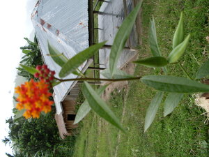

lalew1 
/lalɔw/
v_rt.
v.
for someone (eglalew, miglalew/inlalew, lalew, agent, eg><ø-) to promise (to himself) to not do something again (e.g., not to enter the house of someone else because he is offended by something). (eglalawan, inlalawan/miglalawan/piglalawan, lalawan, location, eg><an-)
Lalawan ku pad ke eggendiyè a te Manila su mig-untud a te eriplanu mig-iileb a. Kenad ad e eggendiyè - eglibed.
One time I went to Manila boarding a plane that was makes me dizzy and spitted on the floor. So I promise not to come back.
Cult. If one breaks this internal promise, then he will become sick. However, if both parties go to a datu, then he will preside over the case and some betel nut chew will be placed on a bamboo (damuluwan) comb (sugkad) and given to the other party.
Eng. promise, to; resolve
Online dict status: -
Usage level: R
n.
(lalawen, rdpCV–en) a promise (to himself)
Due lalawen ku ne kenè ad e eg-untud te eriplanu.
I have been a promised that I'll never ride again an airplane.
Eng. promise
Online dict status: -
Usage level: R
Updated by: RJH,TME,QDL,RJH
Last updated: 28/Jun/2016
This page last updated: 28-Dec-2019
Copyright © 2009-2014, Matigsalug Language Christian Association, Inc